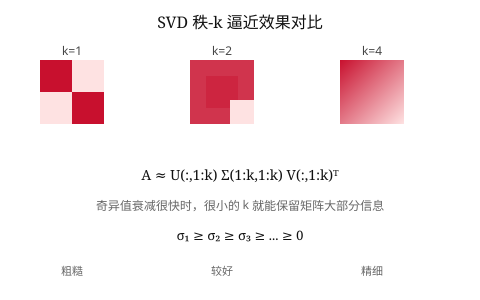

SVD 是普适的分解
任意矩阵 \(A = U\Sigma V^T\)，三个因子都有明确的正交或对角结构，无需任何条件。
18.06 · 第 27 课
每个矩阵都可以分解为 \(A = U \Sigma V^T\)——这是线性代数的"瑞士军刀"。SVD 揭示了矩阵的几何本质：把单位球映为椭球，奇异值就是半轴长度。
对于任意 \(m \times n\) 实矩阵 \(A\)，存在分解：
\[A = U \Sigma V^T\]其中：
几何图像：线性变换 \(A\) 可以分解为三步：先做旋转/反射 \(V^T\)，再做沿坐标轴的拉伸 \(\Sigma\)，最后再做旋转/反射 \(U\)。SVD 告诉我们：任何线性变换都是旋转-拉伸-旋转。
当 \(A\) 把 \(\mathbb{R}^n\) 中的单位球面映到 \(\mathbb{R}^m\) 中时，像是一个椭球面（ellipsoid），其半轴长度恰好是奇异值 \(\sigma_i\)，方向由 \(\mathbf{u}_i\) 给出。
奇异值有一个简洁的代数刻画。计算：
\[A^T A = (V \Sigma^T U^T)(U \Sigma V^T) = V (\Sigma^T \Sigma) V^T\]这是 \(A^T A\) 的特征值分解！因此：
类似地，\(U\) 的列是 \(A A^T\) 的特征向量。
数值提醒：实际计算 SVD 时，一般不通过 \(A^T A\) 来求奇异值——平方根运算会损失数值精度。现代算法（如 Golub-Kahan）直接对 \(A\) 做双对角化再迭代。
设 \(A\) 的秩为 \(r\)，则只有 \(r\) 个非零奇异值。此时可以只保留非零部分，得到紧 SVD（compact SVD）：
\[A = U_r \Sigma_r V_r^T\]其中 \(U_r\) 是 \(m \times r\)，\(\Sigma_r\) 是 \(r \times r\)，\(V_r\) 是 \(n \times r\)。这给出了 \(A\) 的四个基本子空间的正交基：
SVD 的一个核心应用是低秩近似（low-rank approximation）。Eckart-Young 定理告诉我们，在 Frobenius 范数下，\(A\) 的最佳秩-\(k\) 近似为：
\[A_k = \sum_{i=1}^{k} \sigma_i \mathbf{u}_i \mathbf{v}_i^T = U_k \Sigma_k V_k^T\]近似误差为：
\[\|A - A_k\|_F = \sqrt{\sigma_{k+1}^2 + \cdots + \sigma_r^2}\]这在数据压缩中有直接应用：若奇异值衰减很快，只需存储前几项就能很好地近似原矩阵。
图像压缩直觉：一张照片作为像素矩阵，其 SVD 奇异值通常快速衰减。取前 50 个奇异值就能重建出视觉上几乎无损的图片——存储量从 \(mn\) 降到 \(k(m+n+1)\)。
SVD 自然地给出矩阵的伪逆（pseudoinverse）\(A^+\)：
\[A^+ = V \Sigma^+ U^T, \quad \Sigma^+_{ii} = \begin{cases} 1/\sigma_i & \sigma_i > 0 \\ 0 & \sigma_i = 0 \end{cases}\]伪逆是解决不一致最小二乘问题 \(\min \|A\mathbf{x} - \mathbf{b}\|_2\) 的最佳工具。最小范数最小二乘解为：
\[\mathbf{x}^* = A^+ \mathbf{b}\]
问题 1：矩阵 \(A\) 的奇异值与下列哪项直接相关？
问题 2：SVD \(A = U\Sigma V^T\) 的几何含义是什么？
问题 3：在 Frobenius 范数下，矩阵 \(A\) 的最佳秩-\(k\) 近似由什么给出？
问题 4：关于伪逆 \(A^+\)，下列哪项正确？
任意矩阵 \(A = U\Sigma V^T\)，三个因子都有明确的正交或对角结构，无需任何条件。
奇异值是单位球映为椭球后的半轴长度，左右奇异向量给出椭球的轴方向。
Eckart-Young 定理保证：保留前 \(k\) 个奇异值即得最佳秩-\(k\) 近似。
\(A^+\) 给出最小二乘问题的最小范数解，无论 \(A\) 是否可逆、是否方阵。
lecture_slides/lecture_29.pdf